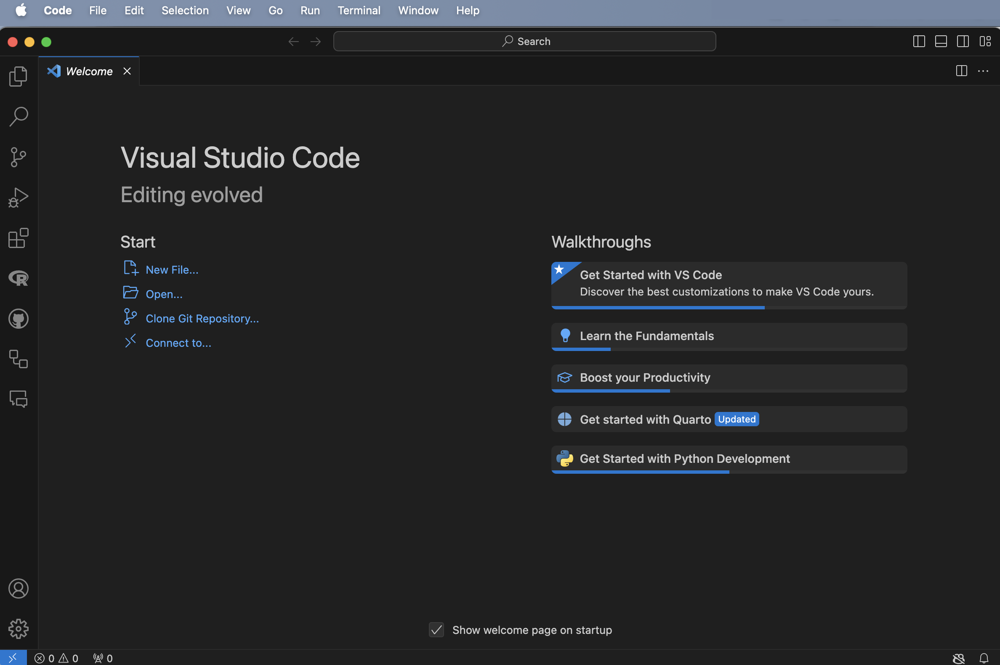
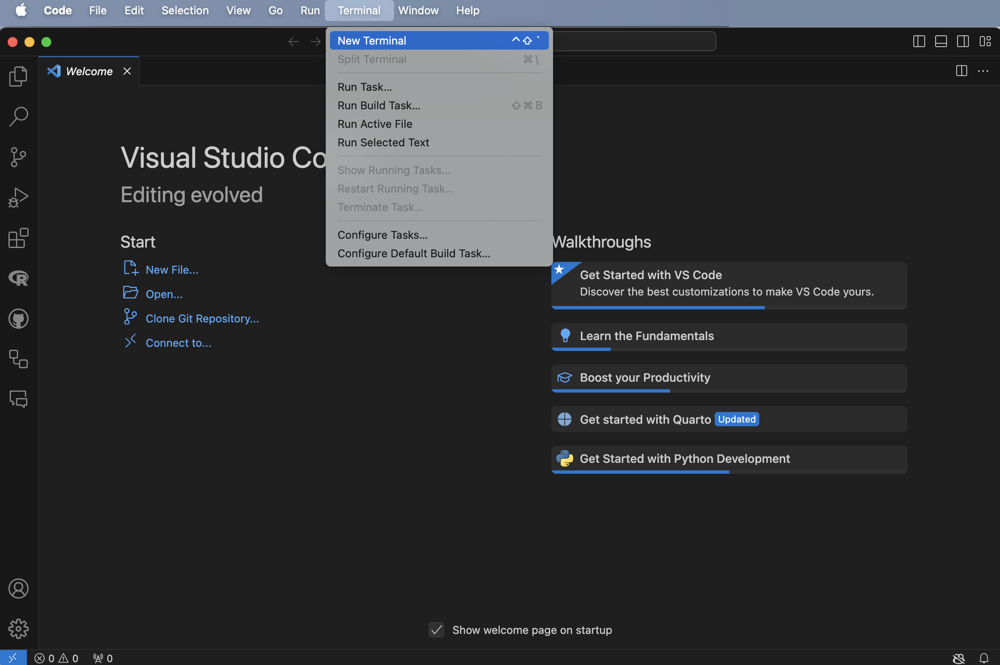
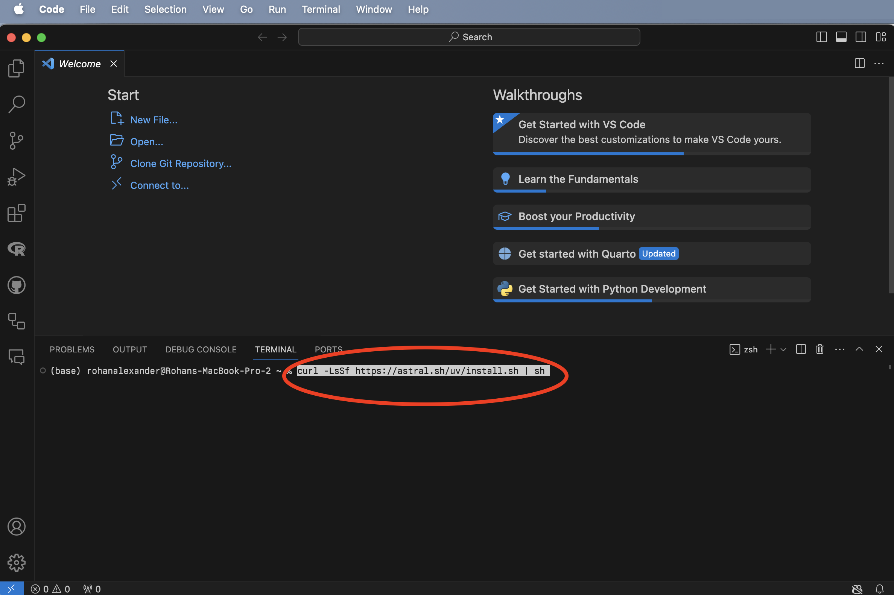
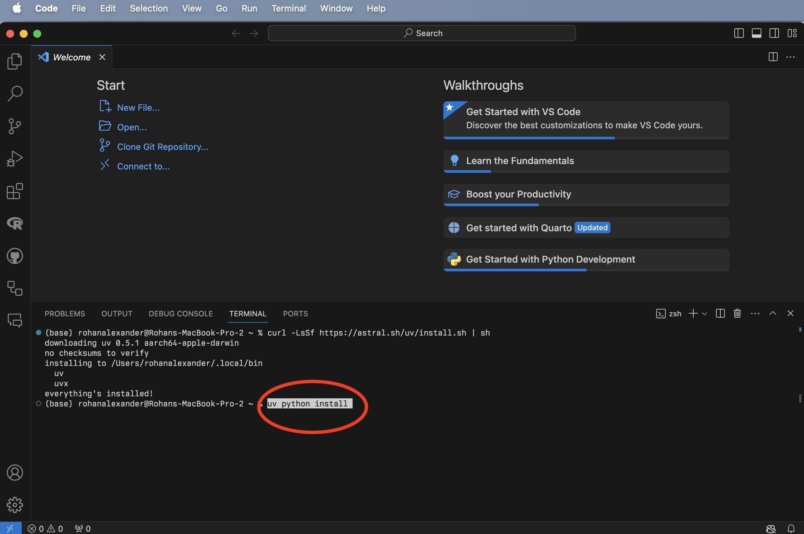
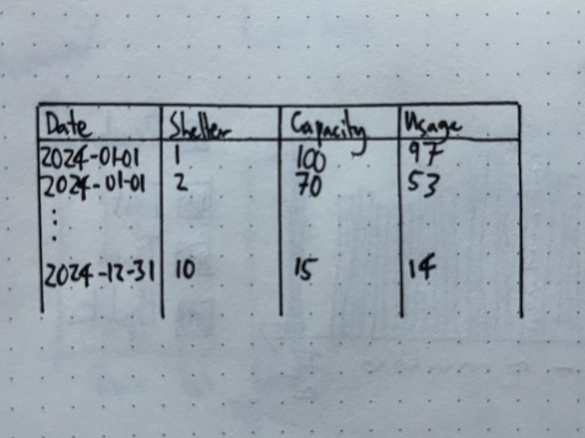
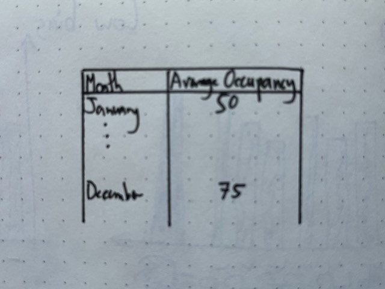

uv init shelter_usage
cd shelter_usageOnline Appendix B — Python 필수 사항
선수 지식
핵심 개념 및 기술
소프트웨어 및 패키지
Python(Python Software Foundation 2024)datetime>=5.5uvpolars
B.1 서론
Python은 귀도 반 로섬이 만든 범용 프로그래밍 언어입니다. Python 버전 0.9.0은 1991년 2월에 출시되었고, 현재 버전인 3.13은 2024년 10월에 출시되었습니다. 몬티 파이튼의 날아다니는 서커스의 이름을 따서 Python이라고 명명되었습니다.
Python은 기계 학습에서 인기 있는 언어이지만, 더 일반적인 소프트웨어 응용 프로그램을 위해 설계되었으며 더 일반적으로 사용됩니다. 이는 데이터 과학을 위해 Python을 사용할 때 특히 패키지에 의존할 것임을 의미합니다. 이 책에서 Python의 사용은 개발된 다른 더 일반적인 용도보다는 데이터 과학에 중점을 둡니다.
R을 알면 데이터 과학을 위한 Python을 빠르게 익힐 수 있습니다. 주요 데이터 과학 패키지는 동일한 기본 문제를 해결해야 합니다.
B.2 Python, VS Code, 그리고 uv
RStudio 내에서 Python을 사용할 수도 있지만, 더 널리 사용되는 VS Code를 사용하는 것도 한 가지 옵션입니다. 여기에서 VS Code를 무료로 다운로드하여 설치할 수 있습니다. 이 과정에서 어려움이 있다면, Posit Cloud에서 시작하여 로컬 머신으로 전환했던 것과 마찬가지로, 여기에서 Google Colab을 처음 사용할 수 있습니다.
VS Code를 열고(그림 B.1 (a)) 새 터미널을 엽니다: 터미널 -> 새 터미널(그림 B.1 (b)). 그런 다음 Python 패키지 관리자인 uv를 설치할 수 있습니다. 터미널에 curl -LsSf https://astral.sh/uv/install.sh | sh를 입력하고 엔터를 누릅니다(그림 B.1 (c)). 마지막으로, Python을 설치하려면 터미널에 uv python install을 입력하고 엔터를 누릅니다(그림 B.1 (d)).




B.3 시작하기
B.3.1 프로젝트 설정
Open Data Toronto에서 데이터를 다운로드하는 예시로 시작하겠습니다. 시작하려면 모든 코드가 자체 포함될 수 있도록 프로젝트를 만들어야 합니다.
VS Code를 열고 새 터미널을 엽니다: “터미널” -> “새 터미널”. 그런 다음 Unix 셸 명령을 사용하여 폴더를 만들고 싶은 곳으로 이동합니다. 예를 들어, ls를 사용하여 현재 디렉토리의 모든 폴더를 나열한 다음, cd와 폴더 이름을 사용하여 폴더로 이동합니다. 한 단계 위로 이동해야 하는 경우 ..를 사용합니다.
이 새 폴더를 만들고 싶은 곳이 만족스러우면 터미널에서 uv init를 사용하여 이를 수행하고, 엔터를 누릅니다(그 다음 cd는 새 폴더 “shelter_usage”로 이동합니다).
기본적으로 예시 폴더에 스크립트가 있을 것입니다. uv run을 사용하여 해당 스크립트를 실행하여 프로젝트 환경을 만들 것입니다.
uv run hello.py프로젝트 환경은 해당 프로젝트에만 해당됩니다. numpy 패키지를 사용하여 데이터를 시뮬레이션할 것입니다. 이 패키지를 uv add를 사용하여 환경에 추가해야 합니다.
uv add numpy그런 다음 hello.py를 수정하여 numpy를 사용하여 정규 분포에서 시뮬레이션할 수 있습니다.
import numpy as np
def main():
np.random.seed(853)
mu, sigma = 0, 1
sample_sizes = [10, 100, 1000, 10000]
differences = []
for size in sample_sizes:
sample = np.random.normal(mu, sigma, size)
sample_mean = np.mean(sample)
diff = abs(mu - sample_mean)
differences.append(diff)
print(f"표본 크기: {size}")
print(f" 표본과 모집단 평균 간의 차이: {round(diff, 3)}")
if __name__ == "__main__":
main()hello.py를 수정하고 저장한 후, 이전과 동일한 방식으로 uv run으로 실행할 수 있습니다.
이 시점에서 VS Code를 닫아야 합니다. 프로젝트 환경이 제대로 작동하는지 확인하기 위해 다시 열고 싶습니다. VS Code에서 프로젝트는 자체 포함된 폴더입니다. “파일” -> “폴더 열기…”로 폴더를 연 다음, 이 경우 “shelter_usage”와 같은 관련 폴더를 선택할 수 있습니다. 그런 다음 uv run hello.py를 다시 실행할 수 있어야 하며, 작동해야 합니다.
B.3.2 계획
이 데이터셋을 장 2 에서 처음 사용했지만, 다시 말하지만, 매일 각 쉼터에 대해 쉼터를 사용한 사람들의 수가 있습니다. 따라서 우리가 시뮬레이션하고 싶은 데이터셋은 그림 B.2 (a) 와 같고, 그림 B.2 (b) 과 같이 매월 평균 일일 점유 침대 수 표를 만들고 싶습니다.


B.3.3 시뮬레이션
관심 있는 데이터셋을 더 철저히 시뮬레이션하고 싶습니다. 시뮬레이션된 결과를 저장할 데이터프레임을 제공하기 위해 polars를 사용할 것이므로, uv add를 사용하여 환경에 추가해야 합니다.
uv add polars00-simulate_data.py라는 새 Python 파일을 만듭니다.
#### 서문 ####
# 목적: 일일 쉼터 사용량 데이터셋 시뮬레이션
# 저자: Rohan Alexander
# 날짜: 2024년 11월 12일
# 연락처: rohan.alexander@utoronto.ca
# 라이선스: MIT
# 전제 조건:
# - `polars` 추가: uv add polars
# - `numpy` 추가: uv add numpy
# - `datetime` 추가: uv add datetime
#### 작업 공간 설정 ####
import polars as pl
import numpy as np
from datetime import date
rng = np.random.default_rng(seed=853)
#### 데이터 시뮬레이션 ####
# 쉼터 10개와 설정된 용량 시뮬레이션
shelters_df = pl.DataFrame(
{
"Shelters": [f"쉼터 {i}" for i in range(1, 11)],
"Capacity": rng.integers(low=10, high=100, size=10),
}
)
# 날짜 데이터프레임 생성
dates = pl.date_range(
start=date(2024, 1, 1), end=date(2024, 12, 31), interval="1d", eager=True
).alias("날짜")
# 날짜를 데이터프레임으로 변환
dates_df = pl.DataFrame(dates)
# 날짜와 쉼터 결합
data = dates_df.join(shelters_df, how="cross")
# 포아송 추출로 사용량 추가
poisson_draw = rng.poisson(lam=data["Capacity"])
usage = np.minimum(poisson_draw, data["Capacity"])
data = data.with_columns([pl.Series("사용량", usage)])
data.write_parquet("simulated_data.parquet")이 시뮬레이션된 데이터를 기반으로 실제 데이터에 적용할 테스트를 작성하고 싶습니다. 이를 위해 pydantic을 사용할 것이므로, uv add를 사용하여 환경에 추가해야 합니다.
uv add pydantic00-test_simulated_data.py라는 새 Python 파일을 만듭니다. 첫 번째 단계는 pydantic에서 제공하는 BaseModel의 하위 클래스인 ShelterData를 정의하는 것입니다.
from pydantic import BaseModel, Field, ValidationError, field_validator
from datetime import date
# Pydantic 모델 정의
class ShelterData(BaseModel):
Dates: date # 날짜 형식 유효성 검사 (예: 'YYYY-MM-DD')
Shelters: str # 문자열이어야 함
Capacity: int = Field(..., ge=0) # 음수가 아닌 정수여야 함
Usage: int = Field(..., ge=0) # 음수가 아니어야 함
# 사용량이 용량을 초과하지 않도록 필드 유효성 검사기 추가
@field_validator("Usage")
def check_usage_not_exceed_capacity(cls, usage, info):
capacity = info.data.get("Capacity")
if capacity is not None and usage > capacity:
raise ValueError(f"사용량 ({usage})이 용량 ({capacity})을 초과합니다.")
return usage날짜가 유효한지, 쉼터가 올바른 유형인지, 용량과 사용량이 모두 음수가 아닌 정수인지 테스트하는 데 관심이 있습니다. 추가적인 문제는 사용량이 용량을 초과해서는 안 된다는 것입니다. 이를 위한 테스트를 작성하기 위해 field_validator를 사용합니다.
그런 다음 시뮬레이션된 데이터셋을 가져와 테스트할 수 있습니다.
import polars as pl
df = pl.read_parquet("simulated_data.parquet")
# Polars DataFrame을 유효성 검사를 위한 딕셔너리 목록으로 변환
data_dicts = df.to_dicts()
# 데이터셋을 일괄적으로 유효성 검사
validated_data = []
errors = []
# 일괄 유효성 검사
for i, row in enumerate(data_dicts):
try:
validated_row = ShelterData(**row) # 각 행 유효성 검사
validated_data.append(validated_row)
except ValidationError as e:
errors.append((i, e))
# 유효성 검사된 데이터를 Polars DataFrame으로 다시 변환
validated_df = pl.DataFrame([row.dict() for row in validated_data])
# 결과 표시
print("유효성 검사된 행:")
print(validated_df)
if errors:
print("\n오류:")
for i, error in errors:
print(f"행 {i}: {error}")오류가 있었다면 어떻게 되었을지 확인하기 위해 두 가지 오류가 포함된 더 작은 데이터셋을 고려할 수 있습니다. 즉, 잘못 형식화된 날짜 하나와 사용량이 용량을 초과하는 상황 하나입니다.
import polars as pl
from pydantic import BaseModel, Field, ValidationError, field_validator
from datetime import date
# Pydantic 모델 정의
class ShelterData(BaseModel):
Dates: date # 날짜 형식 유효성 검사 (예: 'YYYY-MM-DD')
Shelters: str # 문자열이어야 함
Capacity: int = Field(..., ge=0) # 음수가 아닌 정수여야 함
Usage: int = Field(..., ge=0) # 음수가 아니어야 함
# 사용량이 용량을 초과하지 않도록 필드 유효성 검사기 추가
@field_validator("Usage")
def check_usage_not_exceed_capacity(cls, usage, info):
capacity = info.data.get("Capacity")
if capacity is not None and usage > capacity:
raise ValueError(f"사용량 ({usage})이 용량 ({capacity})을 초과할 수 없습니다.")
return usage
# 데이터셋 정의
df = [
{"Dates": "2024-01-01", "Shelters": "쉼터 1", "Capacity": 23, "Usage": 22},
{"Dates": "로한", "Shelters": "쉼터 2", "Capacity": 62, "Usage": 62},
{"Dates": "2024-01-01", "Shelters": "쉼터 3", "Capacity": 93, "Usage": 88},
# 테스트를 위한 잘못된 행 추가
{"Dates": "2024-01-01", "Shelters": "쉼터 4", "Capacity": 50, "Usage": 55},
]
# 데이터셋을 일괄적으로 유효성 검사
validated_data = []
errors = []
# 일괄 유효성 검사
for i, row in enumerate(df):
try:
validated_row = ShelterData(**row) # 각 행 유효성 검사
validated_data.append(validated_row)
except ValidationError as e:
errors.append((i, e))
# 유효성 검사된 데이터를 Polars DataFrame으로 다시 변환
validated_df = pl.DataFrame([row.dict() for row in validated_data])
# 결과 표시
print("유효성 검사된 행:")
print(validated_df)
if errors:
print("\n오류:")
for i, error in errors:
print(f"행 {i}: {error}")다음 메시지가 나타납니다.
오류:
행 1: ShelterData에 대한 1개의 유효성 검사 오류
Dates
입력은 유효한 날짜 또는 datetime이어야 합니다. 입력이 너무 짧습니다 [type=date_from_datetime_parsing, input_value='로한', input_type=str]
자세한 내용은 https://errors.pydantic.dev/2.9/v/date_from_datetime_parsing을 참조하십시오.
행 3: ShelterData에 대한 1개의 유효성 검사 오류
Usage
값 오류, 사용량 (55)이 용량 (50)을 초과할 수 없습니다. [type=value_error, input_value=55, input_type=int]
자세한 내용은 https://errors.pydantic.dev/2.9/v/value_error을 참조하십시오.B.3.4 획득
이전과 동일한 출처 사용: https://ckan0.cf.opendata.inter.prod-toronto.ca/dataset/21c83b32-d5a8-4106-a54f-010dbe49f6f2/resource/ffd20867-6e3c-4074-8427-d63810edf231/download/Daily%20shelter%20overnight%20occupancy.csv
import polars as pl
# CSV 파일 URL
url = "https://ckan0.cf.opendata.inter.prod-toronto.ca/dataset/21c83b32-d5a8-4106-a54f-010dbe49f6f2/resource/ffd20867-6e3c-4074-8427-d63810edf231/download/Daily%20shelter%20overnight%20occupancy.csv"
# CSV 파일을 Polars DataFrame으로 읽기
df = pl.read_csv(url)
# 원시 데이터 저장
df.write_parquet("shelter_usage.parquet")몇 개의 열과 데이터가 있는 행에만 관심이 있을 것입니다.
import polars as pl
df = pl.read_parquet("shelter_usage.parquet")
# 특정 열 선택
selected_columns = ["OCCUPANCY_DATE", "SHELTER_ID", "OCCUPIED_BEDS", "CAPACITY_ACTUAL_BED"]
selected_df = df.select(selected_columns)
# 데이터가 있는 행만 필터링
filtered_df = selected_df.filter(df["OCCUPIED_BEDS"].is_not_null())
print(filtered_df.head())
renamed_df = filtered_df.rename({"OCCUPANCY_DATE": "date",
"SHELTER_ID": "Shelters",
"CAPACITY_ACTUAL_BED": "Capacity",
"OCCUPIED_BEDS": "Usage"
})
print(renamed_df.head())
renamed_df.write_parquet("cleaned_shelter_usage.parquet")그런 다음 실제 데이터셋에 테스트를 적용하고 싶을 수 있습니다.
import polars as pl
from pydantic import BaseModel, Field, ValidationError, field_validator
from datetime import date
# Pydantic 모델 정의
class ShelterData(BaseModel):
Dates: date # 날짜 형식 유효성 검사 (예: 'YYYY-MM-DD')
Shelters: str # 문자열이어야 함
Capacity: int = Field(..., ge=0) # 음수가 아닌 정수여야 함
Usage: int = Field(..., ge=0) # 음수가 아니어야 함
# 사용량이 용량을 초과하지 않도록 필드 유효성 검사기 추가
@field_validator("Usage")
def check_usage_not_exceed_capacity(cls, usage, info):
capacity = info.data.get("Capacity")
if capacity is not None and usage > capacity:
raise ValueError(f"사용량 ({usage})이 용량 ({capacity})을 초과할 수 없습니다.")
return usage
df = pl.read_parquet("cleaned_shelter_usage.parquet")
# Polars DataFrame을 유효성 검사를 위한 딕셔너리 목록으로 변환
data_dicts = df.to_dicts()
# 데이터셋을 일괄적으로 유효성 검사
validated_data = []
errors = []
# 일괄 유효성 검사
for i, row in enumerate(data_dicts):
try:
validated_row = ShelterData(**row) # 각 행 유효성 검사
validated_data.append(validated_row)
except ValidationError as e:
errors.append((i, e))
# 유효성 검사된 데이터를 Polars DataFrame으로 다시 변환
validated_df = pl.DataFrame([row.dict() for row in validated_data])
# 결과 표시
print("유효성 검사된 행:")
print(validated_df)
if errors:
print("\n오류:")
for i, error in errors:
print(f"행 {i}: {error}")B.3.5 탐색
데이터 조작
import polars as pl
df = pl.read_parquet("cleaned_shelter_usage.parquet")
# 날짜 열을 datetime으로 변환하고 명확성을 위해 이름 변경
df = df.with_columns(pl.col("date").str.strptime(pl.Date, "%Y-%m-%d").alias("date"))
# "Dates"로 그룹화하고 총 "Capacity" 및 "Usage" 계산
aggregated_df = (
df.group_by("date")
.agg([
pl.col("Capacity").sum().alias("총 용량"),
pl.col("Usage").sum().alias("총 사용량")
])
.sort("date") # 날짜별로 결과 정렬
)
# 집계된 DataFrame 표시
print(aggregated_df)그래프 만들기
import polars as pl
import seaborn as sns
import matplotlib.pyplot as plt
import pandas as pd
import matplotlib.dates as mdates
# Parquet 파일에서 Polars DataFrame 읽기
df = pl.read_parquet("analysis_data.parquet")
# 'date' 열이 Polars에서 datetime 유형인지 확인
df = df.with_columns([
pl.col('date').cast(pl.Date)
])
# 관련 열을 선택하고 DataFrame 재구성
df_melted = df.select(["date", "총 용량", "총 사용량"]).melt(
id_vars="date",
variable_name="측정 항목",
value_name="값"
)
# Polars DataFrame을 Seaborn을 위한 Pandas DataFrame으로 변환
df_melted_pd = df_melted.to_pandas()
# Pandas에서 'date' 열이 datetime인지 확인
df_melted_pd['date'] = pd.to_datetime(df_melted_pd['date'])
# 플로팅 스타일 설정
sns.set_theme(style="whitegrid")
# 플롯 생성
plt.figure(figsize=(12, 6))
sns.lineplot(
data=df_melted_pd,
x="date",
y="값",
hue="측정 항목",
linewidth=2.5
)
# x축 레이블을 보기 좋게 형식 지정
plt.gca().xaxis.set_major_locator(mdates.AutoDateLocator())
plt.gca().xaxis.set_major_formatter(mdates.DateFormatter('%Y-%m-%d'))
# 가독성을 위해 x축 레이블 회전
plt.xticks(rotation=45)
# 레이블 및 제목 추가
plt.xlabel("날짜")
plt.ylabel("값")
plt.title("시간 경과에 따른 총 용량 및 사용량")
# 눈금 레이블 잘림 방지를 위해 레이아웃 조정
plt.tight_layout()
# 플롯 표시
plt.show()B.3.6 공유
한 가지 좋은 점은 Quarto 문서에서 Python을 사용할 수 있다는 것입니다. 이를 위해 여기에서 Quarto 확장을 설치하여 VS Code에 추가해야 합니다. 터미널에서 quarto preview를 실행하여 문서를 렌더링할 수 있습니다.
VS Code는 Microsoft에서 만들었으며, Microsoft는 GitHub도 소유하고 있습니다. 따라서 계정으로 이동하여 로그인하여 GitHub 계정을 VS Code에 추가할 수 있습니다.
B.4 Python
For 루프
리스트 컴프리헨션
B.5 그래프 만들기
matplotlib
seaborn
B.6 polars 탐색
B.6.1 데이터 가져오기
B.6.2 결합 및 피벗을 사용한 데이터셋 조작
B.6.3 문자열 조작
B.6.4 요인 변수
B.7 연습 문제
연습
퀴즈
과제
무료 Replit “100일 코딩” Python 과정.